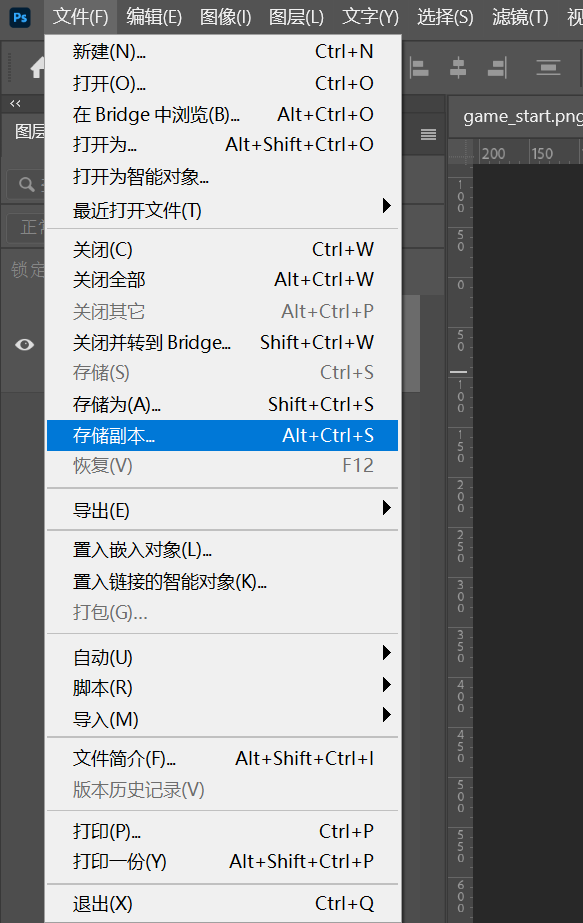
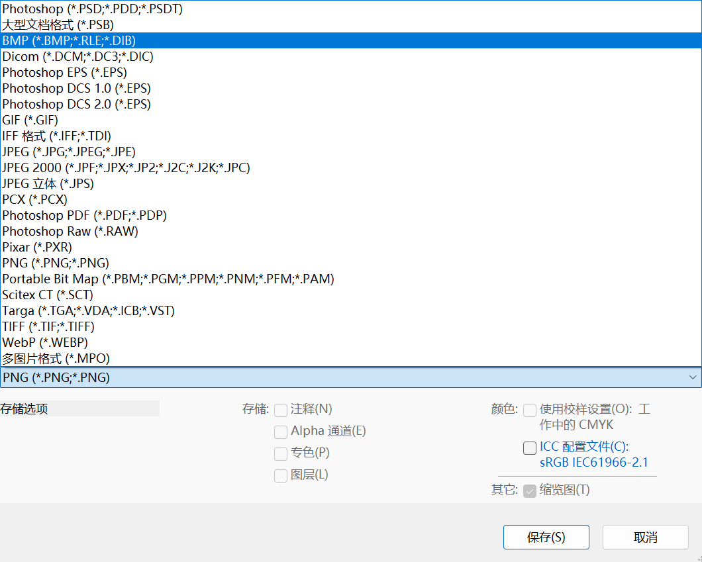
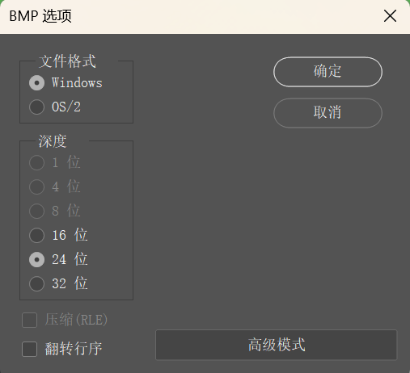
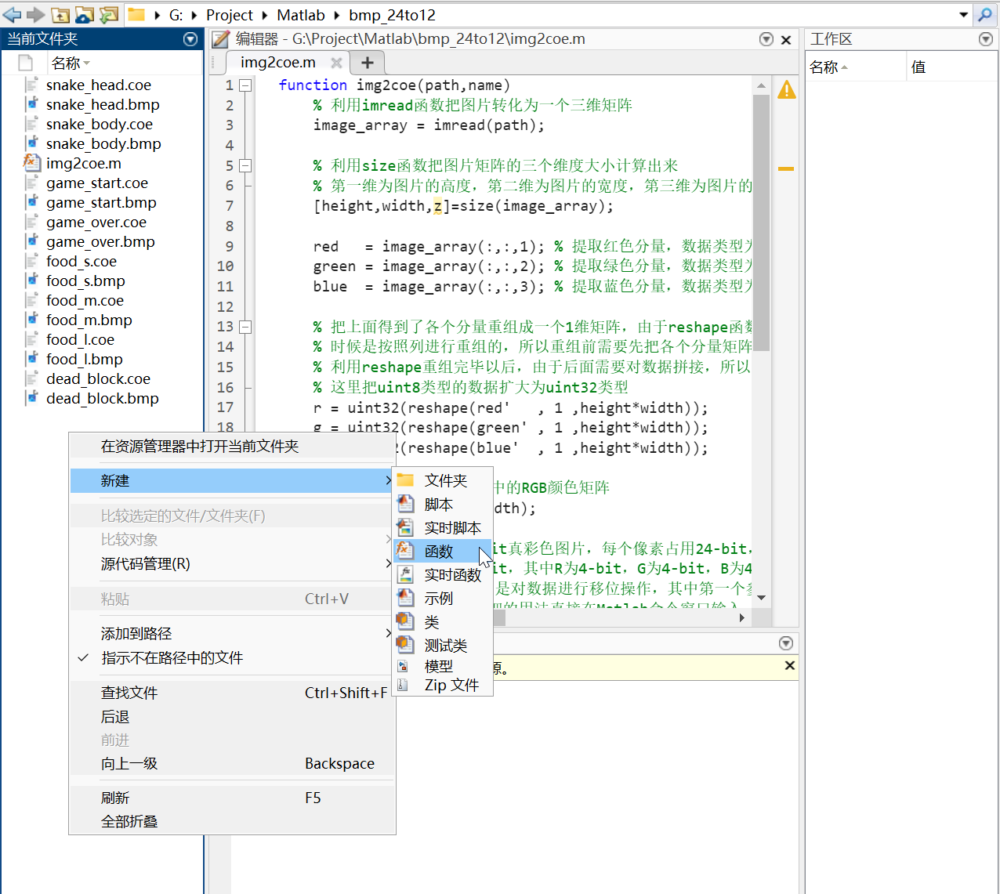
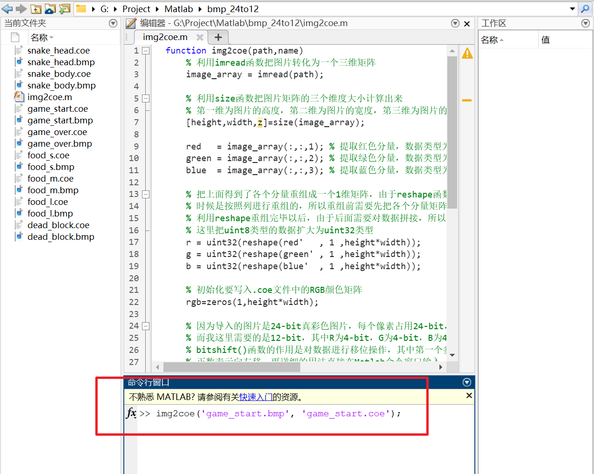
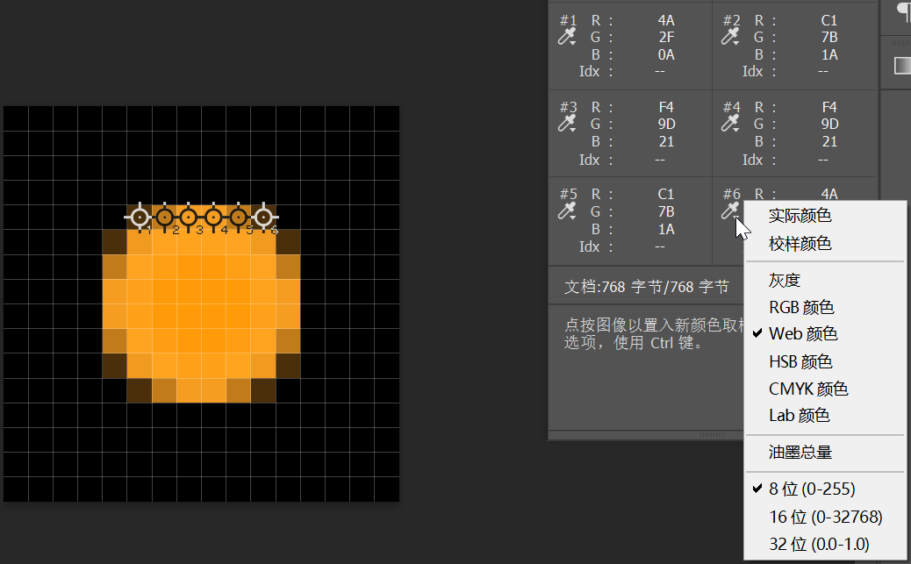
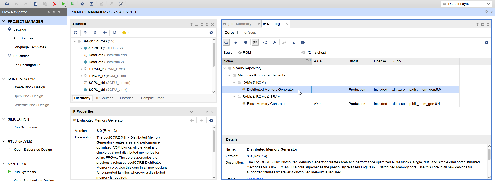

final
注意
具体的 verilog 代码同学们一定要先尝试自己完成，本文档仅作提示和参考作用
VGA 可能需要显示图片，图片的像素信息需要存储在 ROM 当中并生成 IP 核，具体如何操作？关于这种类型的问题，当然可以直接参考学习本文档的相关内容
我们组做的是“贪吃蛇”
1 VGA设计思路
1.1 clk_gen模块
此模块助教已提供，产生 \(25MHz\) 的 \(clk\) 信号，用于 \(VGA\) 的运作
| module clk_gen(
input clk, // 100 MHz
output vga_clk // 25 MHz
);
reg [1:0] clkdiv;
initial clkdiv = 2'b0;
always @(posedge clk) clkdiv = clkdiv + 2'b1;
assign vga_clk = clkdiv[1];
endmodule
|
1.2 vga_ctrl模块
此模块助教已提供。接收像素点的色彩信息（\(Din\)），输出当前像素点的坐标（\(row,col\)）和 \(VGA\) 有关的变量（\(R,G,B,HS,VS\)）
| module vga_ctrl(
input clk, // vga clk = 25 MHz
input rst,
input [11:0]Din, // bbbb_gggg_rrrr, pixel
output reg [8:0]row, // pixel ram row address, 480 (512) lines
output reg [9:0]col, // pixel ram col address, 640 (1024) pixels
output reg rdn, // read pixel RAM(active_low)
output reg [3:0]R, G, B,// red, green, blue colors
output reg HS, VS // horizontal and vertical synchronization
);
// h_count: VGA horizontal counter (0~799)
reg [9:0] h_count; // VGA horizontal counter (0~799): pixels
initial h_count = 10'h0;
always @ (posedge clk) begin
if (rst) h_count <= 10'h0;
else if (h_count == 10'd799)
h_count <= 10'h0;
else h_count <= h_count + 10'h1;
end
// v_count: VGA vertical counter (0~524)
reg [9:0] v_count; // VGA vertical counter (0~524): pixel
initial v_count = 10'h0;
always @ (posedge clk or posedge rst) begin
if (rst) v_count <= 10'h0;
else if (h_count == 10'd799) begin
if (v_count == 10'd524) v_count <= 10'h0;
else v_count <= v_count + 10'h1;
end
end
// signals, will be latched for outputs
wire [9:0] row_addr = v_count - 10'd35; // pixel ram row addr
wire [9:0] col_addr = h_count - 10'd143; // pixel ram col addr
wire h_sync = (h_count > 10'd95); // 96 -> 799
wire v_sync = (v_count > 10'd1); // 2 -> 524
wire read = (h_count > 10'd142) && // 143 -> 782
(h_count < 10'd783) && // 640 pixels
(v_count > 10'd34) && // 35 -> 514
(v_count < 10'd525); // 480 lines
// vga signals
always @ (posedge clk) begin
row <= row_addr[8:0]; // pixel ram row address
col <= col_addr; // pixel ram col address
rdn <= ~read; // read pixel (active low)
HS <= h_sync; // horizontal synchronization
VS <= v_sync; // vertical synchronization
R <= rdn ? 4'h0 : Din[3:0]; // 3-bit red
G <= rdn ? 4'h0 : Din[7:4]; // 3-bit green
B <= rdn ? 4'h0 : Din[11:8]; // 2-bit blue
end
endmodule
|
1.3 vga_screen_pic模块
核心模块，输出当前像素点的色彩信息并提供给 \(vga\_ctrl\) 模块
1.3.1 IP核的生成
图片制作
部分图片是由 \(AI\) 生成并使用 \(PS\) 进行一定处理后产生。
游戏开始画面
图像分辨率：\(640 \times 480\)

游戏结束画面
图像分辨率：\(640 \times 480\)
游戏中画面
蛇的身体：
图像分辨率：\(16 \times 16\)

蛇的头部：
图像分辨率：\(16 \times 16\)
死亡格：
图像分辨率：\(16 \times 16\)

小食物：
图像分辨率：\(16 \times 16\)
中食物：
图像分辨率：\(16 \times 16\)

大食物：
图像分辨率：\(16 \times 16\)

图片处理
参考：
1. VGA显示图像 详细总结，原文部分地方有误，本文档已修改
2. 基于rom的vga图像显示
所有图片导出为24位 \(.bmp\) 文件，并使用 \(Matlab\) 将其转换为符合格式的 \(.coe\) 文件。
Matlab 下载：浙江大学校园正版化软件平台
PS 导出为 .bmp 文件
PS 下载：浙江大学校园正版化软件平台
PS打开目标图片，选择 文件 -> 存储副本

选择 .bmp 类型，选择文件保存位置，点击 保存

文件格式 选择 Windows，深度 选择 24位，点击 确定

转换函数如下：
| function img2coe(path,name)
% 利用imread函数把图片转化为一个三维矩阵
image_array = imread(path);
% 利用size函数把图片矩阵的三个维度大小计算出来
% 第一维为图片的高度，第二维为图片的宽度，第三维为图片的RGB分量
[height,width,z]=size(image_array);
red = image_array(:,:,1); % 提取红色分量，数据类型为uint8
green = image_array(:,:,2); % 提取绿色分量，数据类型为uint8
blue = image_array(:,:,3); % 提取蓝色分量，数据类型为uint8
% 把上面得到了各个分量重组成一个1维矩阵，由于reshape函数重组矩阵的
% 时候是按照列进行重组的，所以重组前需要先把各个分量矩阵进行转置以后再重组
% 利用reshape重组完毕以后，由于后面需要对数据拼接，所以为了避免溢出
% 这里把uint8类型的数据扩大为uint32类型
r = uint32(reshape(red' , 1 ,height*width));
g = uint32(reshape(green' , 1 ,height*width));
b = uint32(reshape(blue' , 1 ,height*width));
% 初始化要写入.coe文件中的RGB颜色矩阵
rgb=zeros(1,height*width);
% 因为导入的图片是24-bit真彩色图片，每个像素占用24-bit，其中RGB分别占用8-bit
% 而我这里需要的是12-bit，其中R为4-bit，G为4-bit，B为4-bit，所以需要在这里对24-bit的数据进行重组与拼接
% bitshift()函数的作用是对数据进行移位操作，其中第一个参数是要进行移位的数据，第二个参数为负数表示向右移，为
% 正数表示向左移，更详细的用法直接在Matlab命令窗口输入 doc bitshift 进行查看
% 所以这里对红色分量先右移4位取出高4位，然后左移8位作为ROM中RGB数据的第11-bit到第8-bit
% 对绿色分量先右移4位取出高4位，然后左移4位作为ROM中RGB数据的第7-bit到第4-bit
% 对蓝色分量先右移4位取出高4位，然后左移0位作为ROM中RGB数据的第3-bit到第0-bit
for i = 1:height*width
rgb(i) = bitshift(bitshift(r(i),-4),8) + bitshift(bitshift(g(i),-4),4) + bitshift(bitshift(b(i),-4),0);
end
fid = fopen( name , 'w+' );
% .coe文件的最前面一行必须为这个字符串，其中16表示16进制
fprintf( fid, 'memory_initialization_radix=16;\n');
% .coe文件的第二行必须为这个字符串
fprintf( fid, 'memory_initialization_vector =\n');
% 把rgb数据的前 height*width-1 个数据写入.coe文件中，每个数据之间用逗号隔开
fprintf( fid, '%x,\n',rgb(1:end-1));
% 把rgb数据的最后一个数据写入.coe文件中，并用分号结尾
fprintf( fid, '%x;',rgb(end));
fclose( fid ); % 关闭文件指针
end
|
matlab 转换为 .coe 文件
打开某一文件夹，在左边工作区右键，新建 \(img2coe.m\) 函数文件

将上述代码复制粘贴到 \(img2coe.m\) 文件中
将目标图片复制粘贴至与 \(img2coe.m\) 文件同一目录下，在下方 命令行窗口 输入 img2coe('{img}.bmp', '{img}.coe'); ，例如 img2coe('game_start.bmp', 'game_start.coe');，即可在同一目录下生成 .coe 文件

生成的 \(.coe\) 文件格式如下（拿 \(food\_l.coe\) 举例）：
| memory_initialization_radix=16; // 表示以下数据用16进制表示
memory_initialization_vector = // 具体数据
0, // 从左到右，从上到下，各个像素点的颜色信息
0, // 共 256 个数据，因为此图片分辨率为 16 x 16，共 256 个像素点
0,
0,
0,
0,
-- snip -- // 这里省略展示部分数据
420,
c71,
f92,
f92,
c71,
420,
-- snip --
0,
0;
|
打开 PS，选择 颜色取样工具 ，在图中左键单击可添加标记点，左键单击右侧 信息 栏中标记点的下三角图标，选择 Web颜色 ，即可对数据进行检验。例如标记如图 6 个点，数据信息和 .coe 文件数据相同。PS 中 R、G、B 三个通道的数值均为 8 bit，.coe 文件中为 4 bit，取 PS 中各通道显示数据的最高一位，即和 .coe 文件中的数据相同。例如标记点3，PS 中 R、G、B 分别为 F4、9D、21，各取最高一位即为 .coe 文件中的数据 f92 （上方代码块第 12 行）

生成IP核
利用 \(vivado\) 生成IP核，导入 \(.coe\) 文件，选择生成 \(ROM\)
vivado 生成 ROM
打开项目工程文件，点击左侧的 IP Catalog，搜索 ROM，双击 Distributed Memory Generator
Distributed Memory Generator 会生成不包含时钟信号的存储器，Block Memory Generator 会生成包含时钟信号的存储器，我们组的实现方案不需要时钟信号，因此选择生成 Distributed Memory Generator

图中的工程文件是我随便找的，用来截图做示范的，所以图中的源文件不需要关注